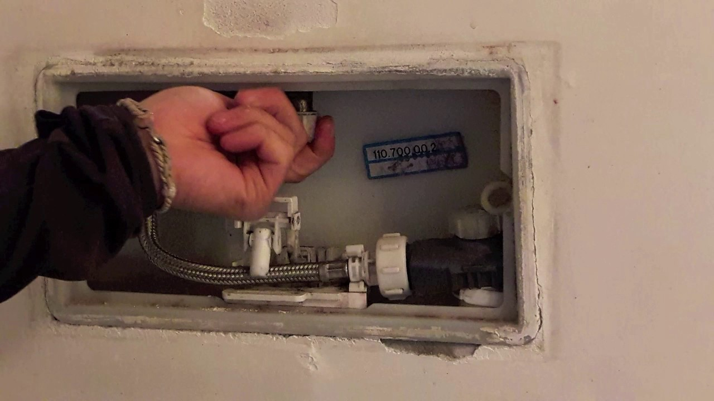

Riparazioni, Assistenza, Permuta e vendita di iPhone iPad Samsung | iRiparo
 Home Riparazioni Ricondizionati Servizi iRiparo Protection Display iRiparo Transfer Servizi software Pellicole autorigeneranti ZAGG Scegli lo smartphone, scegli le rate Accessori per smartphone Accessori per Smart Working e DAD Ricambi Negozi Franchising Home Riparazioni Ricondizionati Servizi iRiparo Protection Display iRiparo Transfer Servizi software Pellicole autorigeneranti ZAGG Scegli lo smartphone, scegli le rate Accessori per smartphone Accessori per Smart Working e DAD Ricambi Negozi Franchising Home Riparazioni Ricondizionati
Servizi
iRiparo Protection Display iRiparo Transfer Servizi software Pellicole autorigeneranti ZAGG Scegli lo smartphone, scegli le rate Accessori per smartphone Accessori per Smart Working e DAD Ricambi Negozi FranchisingRiparazioni Express
Negli oltre 300 negozi, i nostri tecnici specializzati riparano tutti i modelli di smartphone e tablet anche in poche ore.
Ripara in negozio Prenota un appuntamentoRipara su appuntamento
Prenota una riparazione su appuntamento o scopri la modalità di ritiro a domicilio
Prenota un appuntamento Ripara a domicilioRicondizionati Garantiti
Smartphone e tablet come nuovi, testati e garantiti 12 mesi.
Cercalo in negozioPellicole protettive
Tutto per uno smartphone protetto sempre al top.
Pellicole protettive Accessori iRiparo 352Negozi
629702Riparazioni effettuate ad oggi
18530Riparazioni a listino
Perché scegliere iRiparo
Garanzia su tutte le riparazioni
Offriamo una garanzia su tutte le nostre riparazioni. Ed inoltre un servizio di 12 mesi di Ripristino di garanzia grazie all’iRiparo Protection! In caso di malfunzionamento post riparazione iRiparo risolverà il problema gratuitamente.
Riparazioni express, anche in giornata
Sappiamo cosa cerchi, la qualità e la velocità del nostro lavoro sono indispensabili. Molte riparazioni possono essere effettuate nello stesso giorno. Sappiamo lavorare velocemente per risolvere i problemi e farti contento.
Tecnici formati e specializzati
Nei nostri punti vendita trovi tecnici altamente specializzati che, oltre a riparare qualsiasi tipo di smartphone e tablet, sono in grado di fornire una puntuale ed adeguata assistenza su tutto il mondo dei dispositivi mobili.
Hai rotto il tuo dispositivo? Niente paura!
Hai fatto cadere il tuo dispositivo e si è rotto il vetro? La batteria si scarica velocemente? Qualcosa ha smesso di funzionare?
Vieni in negozio o veniamo noi da te
Portaci il tuo dispositivo in uno dei nostri negozi. Altrimenti acquista una riparazione online, il corriere verrà a casa tua il prima possibile.
I nostri tecnici si mettono all opera
I nostri tecnici sono super qualificati e si prenderanno cura del tuo dispositivo. In alcuni casi riescono a fare la riparazione in giornata.
Il tuo dispositivo è come nuovo
Il 99% delle riparazioni hanno esito positivo. Inoltre con iRiparo Protection avrai una copertura valida 12 mesi sui danni non accidentali.
Vuoi parlare con qualcuno?
Ottieni assistenza tramite telefono, chat o email, richiedi una riparazione oppure fissa un appuntamento con il Laboratorio iRiparo.
Scrivici su Messanger
Telefona al numero 0546 057130
Manda una mail a info@iriparo.com
Consulta la nostra sezione di Aiuto
Recati nel Negozio più vicino a te
Lasciaci un’ opinione e aiutaci a migliorare
Utilizzando questo sito, acconsenti ai cookie che utilizziamo per fornire e migliorare i nostri servizi. Cosa sono i Cookie?
Non solo riparazioni
Presso i punti vendita iRiparo trovi una selezione di dispositivi usati ricondizionati garantiti 12 mesi.
E se il tuo dispositivo ha ancora valore la rete iRiparo lo valuta, permuta e acquista.
Dispositivi usati garantiti Permuta il tuo dispositivo Vendi il tuo dispositivo Se vuoi acquistare un iPhone od uno Smartphone usato ricondizionato iRiparo ti basta recarti presso il punto vendita iRiparo della tua zona.
Troverai una gamma di dispositivi usati di ultima generazione perfettamente funzionanti e coperti da garanzia iRiparo di 12 mesi.
Trova negozio
Ti sei stancato del tuo dispositivo? Presso uno dei nostri punti vendita puoi scegliere di permutare il tuo Smartphone o Tablet con un device ricondizionato e garantito iRiparo.
Puoi scegliere tra i dispositivi presenti in negozio o tra una lista di modelli disponibili in pochi giorni.
Trova negozio
Se vuoi vendere il tuo dispositivo usato puoi chiedere ad un punto vendita iRiparo. Il valore degli smartphone e dei tablet usati è molto variabile e dipende dalla marca dal modello e da diversi altri fattori.
I tecnici iRiparo sono in grado di fare una immediata valutazione del tuo usato e di ritirarlo direttamente in negozio.
Trova negozio
iRiparo S.r.l. via Emilia Ponente 355, Castel Bolognese (RA) 48014
P.IVA: 03450230044
Email: info@iriparo.com
Telefono: 0546 057130
Prodotti e servizi
Riparazioni Ricambi per Smartphone e Tablet Pellicole autorigeneranti ZAGG Scegli lo smartphone, scegli le rate iRiparo per le aziende Ricondizionati garantiti Accessori per smartphone AiutoAltri Link
Chi siamo Contatti Prenota un appuntamento online Dicono di noi Affiliazioni Franchising I nostri negozi Lascia un’opinione Lavorare in iRiparo Privacy Policy Cookie PolicySito web creato da © iRiparo. Tutti i diritti sono riservati.
Attenzione
Scegli il negozio che effettua il servizio a domicilio più vicino
Inserisci il tuo indirizzo comprensivo di via , numero civico e città :
Non hai trovato un negozio che effettui consegna a domicilio? Nessun problema! In questa pagina trovi tutti i nostri centri iRiparo! Contatta quello a te più vicino!
CHIUDI Accettazione Privacy Nel rispetto della tutela della privacy e nel rispetto dei dati sensibili, è garantito che nessun dato che sia stato fornito personalmente sarà divulgato a terze parti. Il titolare del trattamento dei dati personali è la Sede Centrale iRiparo, con sede in Castel Bolognese (RA), via Emilia Ponente n. 355 che, nel rispetto di quanto previsto dal GDPR Regolamento sulla Privacy UE 2016/679, garantisce che il trattamento dei dati personali si svolge nel rispetto dei diritti e delle libertà fondamentali, nonché della dignità dell’interessato, con particolare riferimento alla riservatezza, all’identità personale ed al diritto alla protezione dei dati personali.
Alla luce di quanto sopra riportato il Sottoscritto, cliccando sul pulsante ‘Invia richiesta’ acconsente al trattamento, conservazione e comunicazione dei propri dati con le modalità previste dalla Legge. Potrà in ogni momento revocarne l’utilizzo scrivendo una email a privacy@iriparo.com .